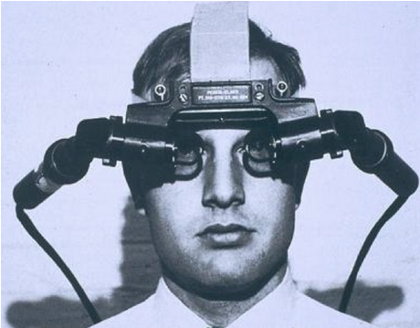

Zgodovina navidezne resničnosti
Natančen izvor navidezne resničnosti je sporen, delno zaradi tega, kako težko je oblikovati opredelitev pojma alternativnega obstoja. Razvoj perspektive v renesančni Evropi je ustvaril prepričljive prikaze prostorov, ki niso obstajali, v tem, kar smo imenovali »množenje umetnih svetov«. Drugi elementi navidezne resničnosti so se pojavili že v 60. letih 19. stoletja. Antonin Artaud je zavzel stališče, da se iluzija ne razlikuje od resničnosti in zagovarja, da bi gledalci v igri morali prekiniti nevero in dramo na odru kot resničnost. Prva omemba sodobnejšega koncepta navidezne resničnosti je izhajala iz znanstvene fantastike.